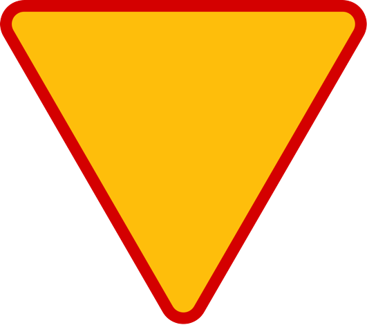
Ustąp piewszeństwa Znak A-7, czyli ustąp pierwszeństwa, znajduje się przy drogach podporządkowanych. Widząc go, musisz przepuścić wszystkie pojazdy, które jadą po drodze uprzywilejowanej.

Ustąp piewszeństwa Znak A-7, czyli ustąp pierwszeństwa, znajduje się przy drogach podporządkowanych. Widząc go, musisz przepuścić wszystkie pojazdy, które jadą po drodze uprzywilejowanej.
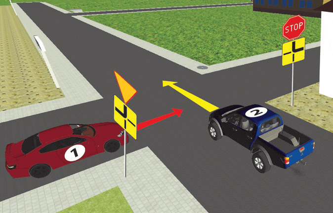
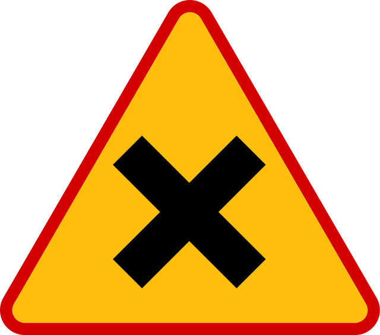
Skrzyzowanie równorzędne Pierwszeństwo przejazdu na takim skrzyżowaniu ma pojazd nadjeżdżający z prawej strony (jeżeli wykonuje się skręt w lewo, należy także ustąpić pierwszeństwa pojazdowi jadącemu z kierunku przeciwnego na wprost lub skręcającemu w prawo).
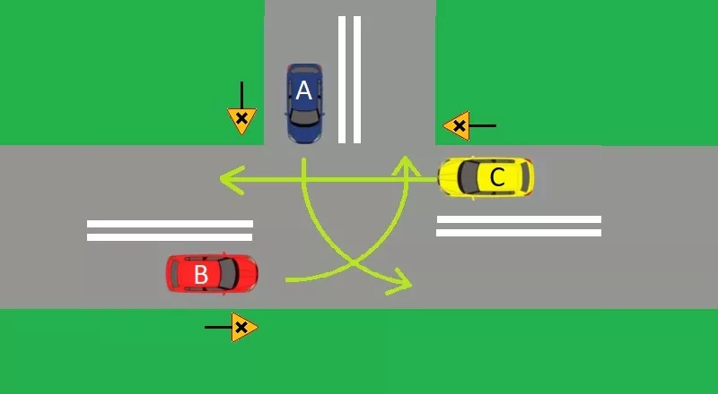
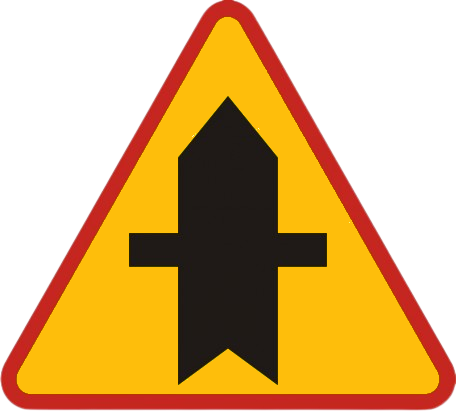
Skrzyżowanie z drogą podporządkowaną występującą po obu stronach. Znak pokazuje, że po obu stronach drogi z pierwszeństwem znajduje się droga podporządkowana, oznacza więc, że kierujący który widzi ten znak, ma pierwszeństwo przejazdu przez skrzyżowanie.
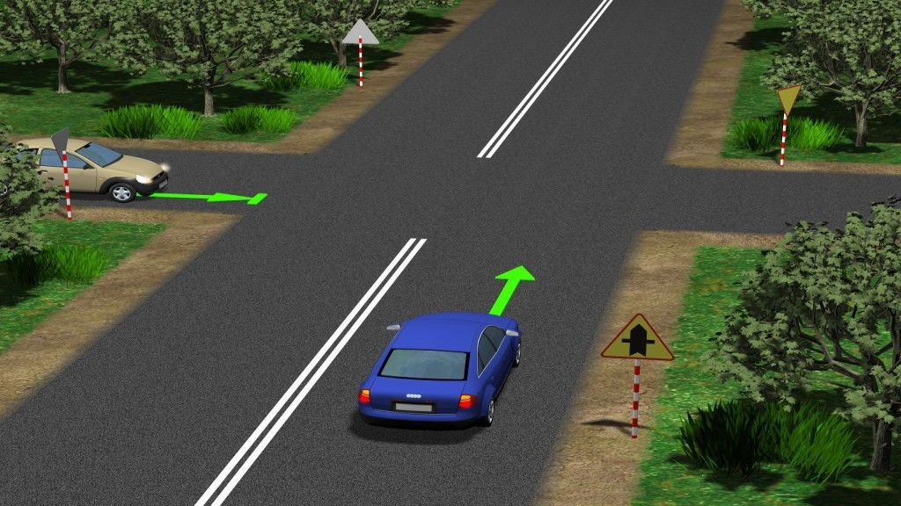
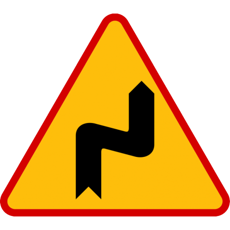
Niebezpieczne zakręty - pierwszy w prawo ostrzega o niebezpiecznych zakrętach, z których pierwszy jest w prawo. Umieszczona pod znakiem tabliczka T-4 wskazuje liczbę zakrętów większą niż dwa, natomiast tabliczka T-5 wskazuje początek drogi krętej.
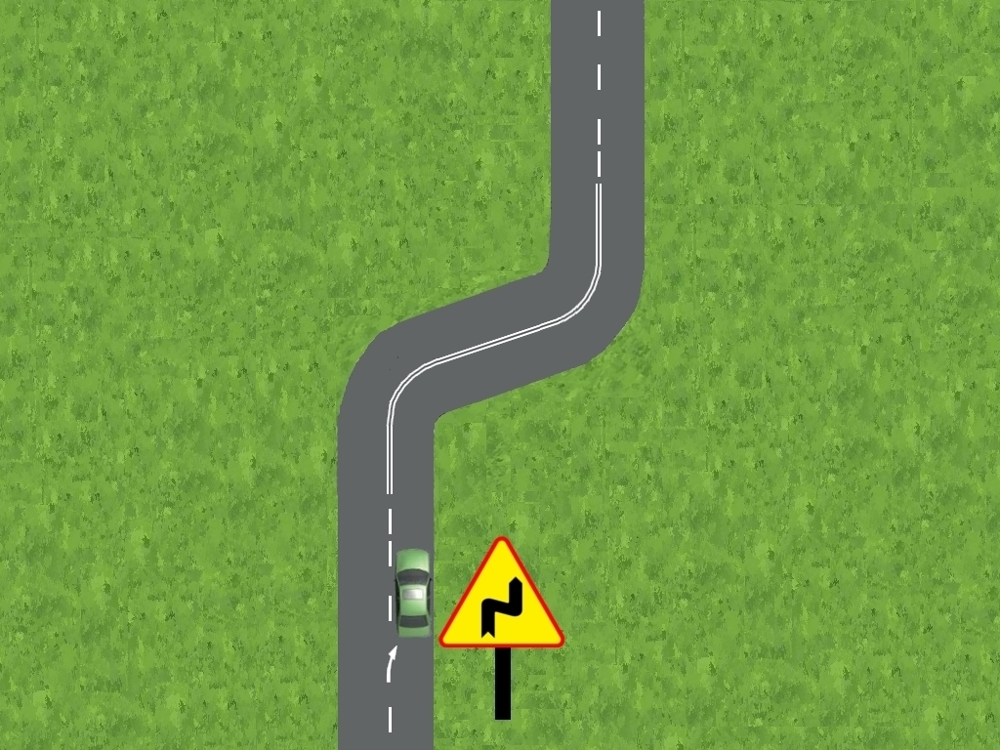
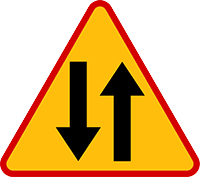
Odcinek jezdni o ruchu dwukierunkowym ostrzega jadących jezdnią jednokierunkową o miejscu, w którym rozpoczyna się ruch dwukierunkowy.
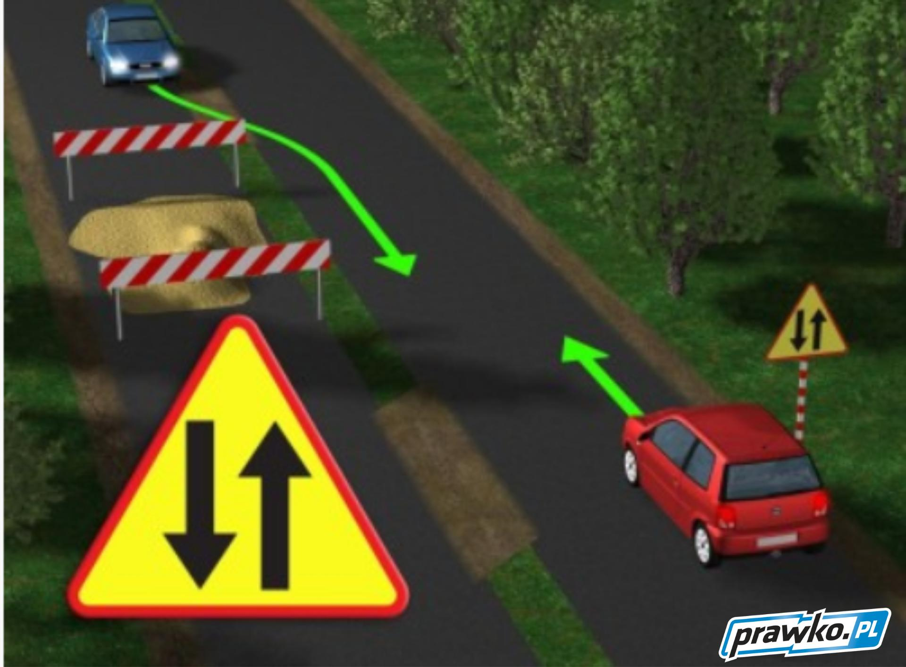
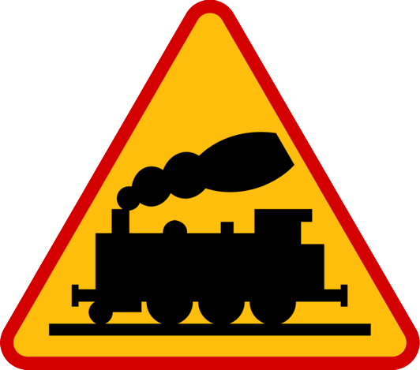
Przejazd kolejowy bez zapór ostrzega o przejeździe kolejowym niewyposażonym ani w zapory, ani w półzapory. Umieszczona pod znakiem A-10 tabliczka T-7 wskazuje układ torów i drogi na przejeździe.
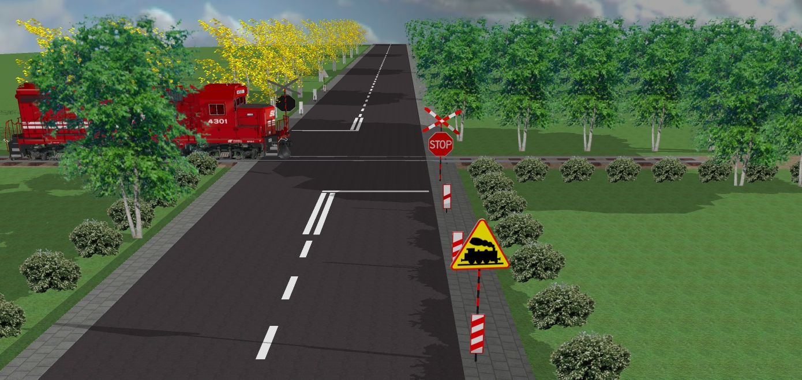